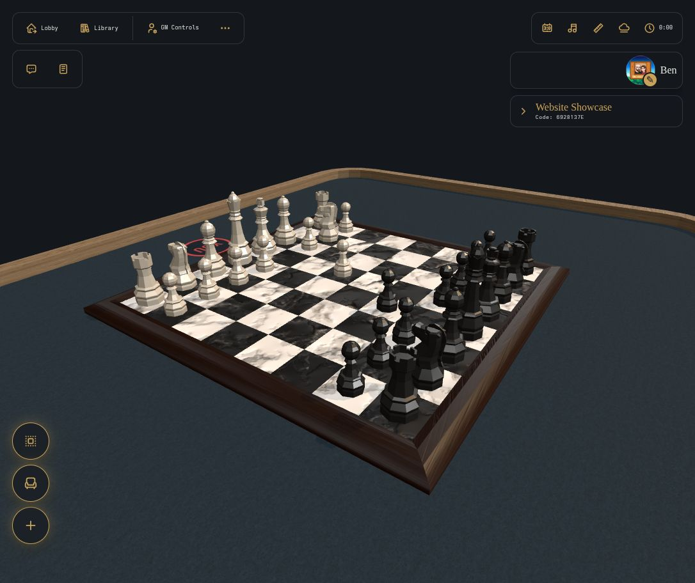
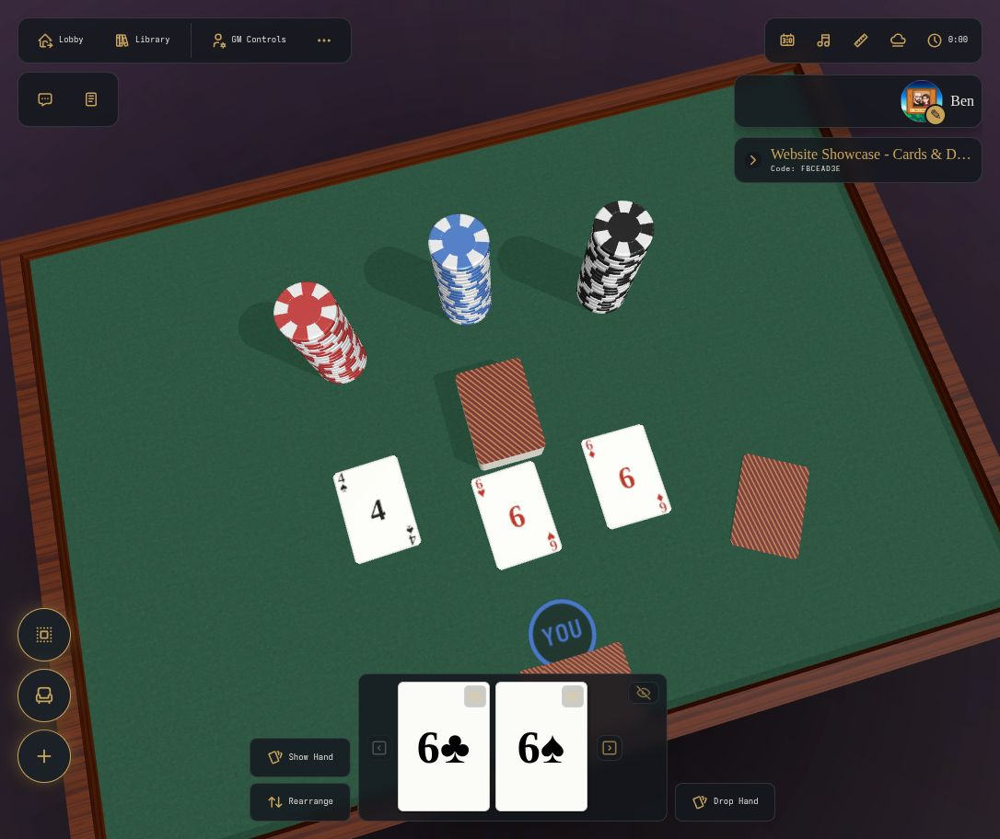
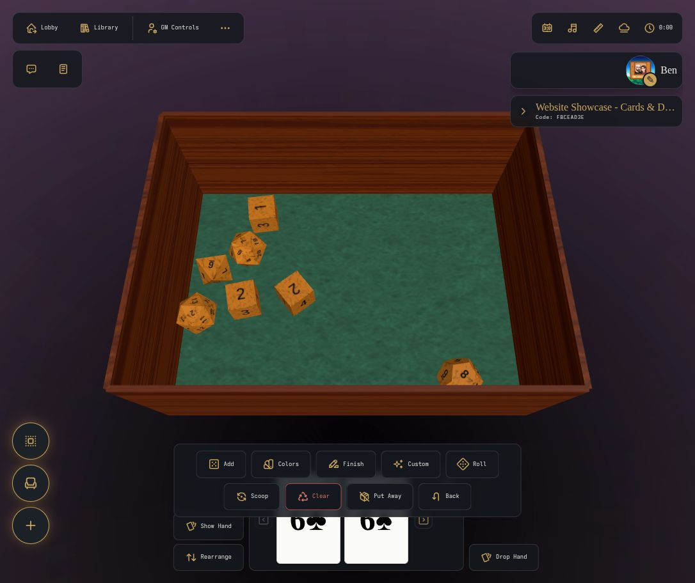

Your table
your rules.
Card games, board games, D&D? You can play all of them and more. Use the built-in assets, or upload your own custom assets to play your custom creations with your friends. No 3rd-party accounts required. Host your own server and let your friends connect via any web-browser.
No account needed. Start a temporary table and invite friends. Demo tables expire after two hours.

- Play in your browser
- Host it yourself
- Your group decides the rules
What you can do
Move and use game pieces
Roll dice, stack objects, and deal cards. Pieces respond to physics, and players handle the game rules.
Add your own game assets
Upload decks, boards, and props to your library. Save a scene to reuse the same setup.
Save your game
Save the table and players' hands between sessions. Returning players can rejoin the room and reclaim their hands.
A closer look


Install Open Tabletop
The wiki covers hosting, configuration, and how to play.